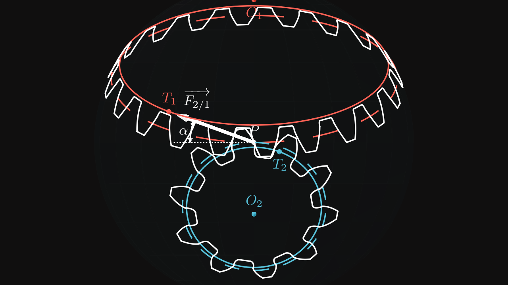
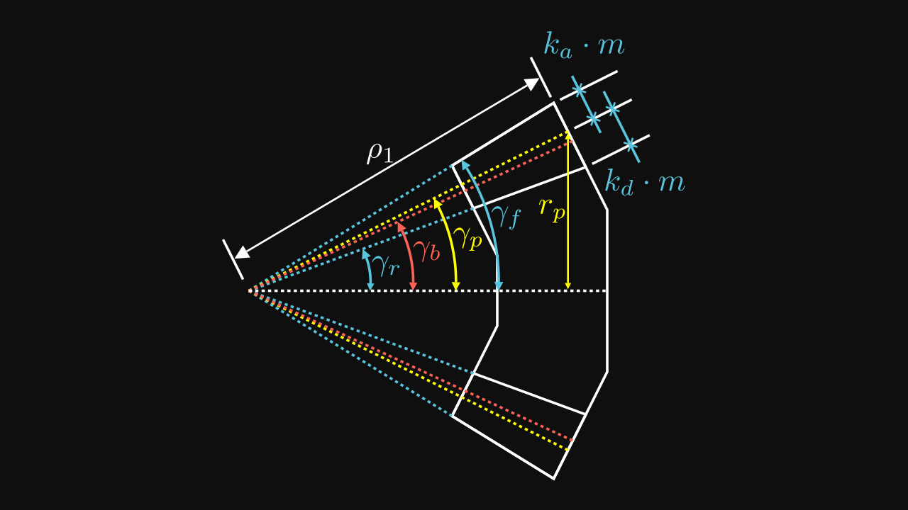
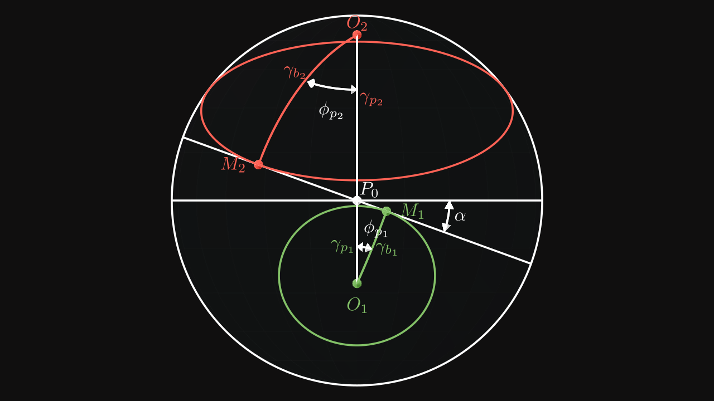
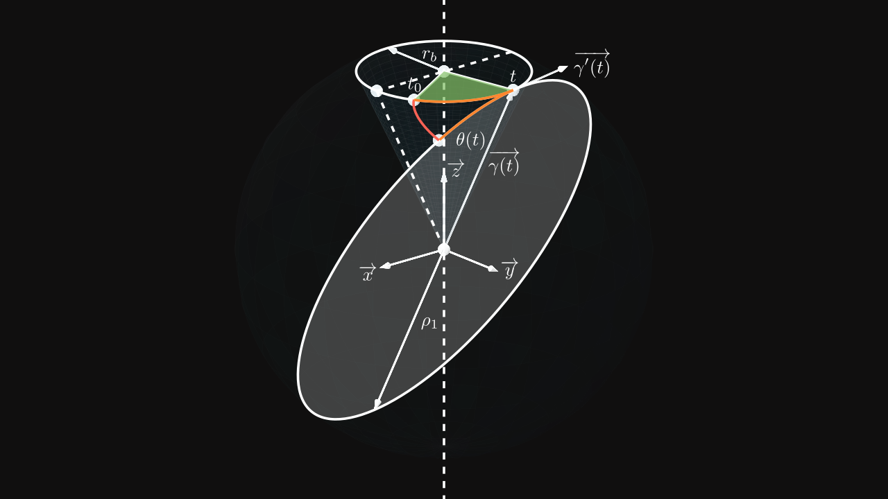

Bevel gears are designed to transmit mechanical energy between intersecting shafts. However, to design them in a CAD software can be a tough task.

In this part, we will see how to compute the involute function of a bevel gear.
Involute function
Historically, bevel gears were imagined and designed to be spherical gears. However, due to difficulties to machine them, they are designed based on cone shape instead of a sphere.
In order to find the involute function for bevel gears, we should imagine a sphere where a pinion gear profile and a wheel gear profile are projected on a sphere.
Bevel gear section

There are several fundamental dimensions to know in order to define the involute function :
| Variable | Description |
|---|---|
| \(m\) | the module |
| \(z\) | the number of teeth |
| \(\alpha\) | the pressure angle |
| \(k_a\) | the addendum coefficient usually \(k_a = 1\) |
| \(k_f\) | the dedendum coefficient usually \(k_f = 1.25\) |
| \(r_p\) | the pitch radius |
| \(r_b\) | the base radius |
| \(\gamma_p\) | the pitch cone angle |
| \(\gamma_b\) | the base cone angle |
| \(\gamma_r\) | the addendum cone angle |
| \(\gamma_f\) | the dedendum cone angle |
| \(\rho_1\) | the external sphere radius |
| \(\rho_0\) | the internal sphere radius |
Some relations are already known such as :
\[ r_p = \frac{m \cdot z} {2} \]
\[ \rho_1 = \frac{2}{3} \rho_0 \]
Since the difference between \(\rho_1\) and \(\rho_0\) is equivalent to the tooth depth, its relation can be reworked and adapted with a third parameter which would be the tooth depth. Often, the standard expression is \(\rho_0 = \rho_1 - F_w\) where \(F_w\) is the face width, generally equals to \(\frac{1}{3} \rho_1\).
Pitch radius
On the figure 1, we can easily find a direct relation between \(\rho_1\) and addendum, pitch, base and dedendum radii \(r\) with their cone angle \(\gamma\):
\[ \rho_1 = \frac{r}{\sin(\gamma)} \]
More specifically, for the pitch radius \(r_p\) and the pitch cone angle \(\gamma_p\), the relation is:
\[ \boxed{ \rho_1 = \frac{r_p}{\sin(\gamma_p)} = \frac{m z}{2 \sin(\gamma_p)} } \]
Addendum and dedendum cone angles
On the figure 1, the following relations can be found : \[ \gamma_f = \gamma_p + \tan^{-1}\left(\frac {k_a m} {\rho_1}\right) = \gamma_p + \tan^{-1}\left(\frac {2 k_a \sin(\gamma_p)} z\right) \]
\[ \gamma_r = \gamma_p - \tan^{-1}\left(\frac {k_d m} {\rho_1}\right) = \gamma_p - \tan^{-1}\left(\frac {2 k_d \sin(\gamma_p)} z\right) \]
where \(z\) is the number of teeth, \(\gamma_p\) is the pitch cone angle, \(k_a\) is the addendum coefficient, usually equals to \(1\) and \(k_f\) is the dedendum coefficient, usually equals ot \(1.25\).
Transmission and impact of pressure angle
Like spur gears, bevel gears are rolling on an imagined rack which, instead of being a straight, is defined on a sphere. The pitch line of the rack becomes a pitch circle and the radius of this specific circle is the radius of the sphere on which the pinion and the wheel profiles are defined (\(\rho_1\)).

This figure highlights several paramaters such as the pressure angle \(\alpha\), the pitch cone angle \(\gamma_p\) and the base cone angle \(\gamma_b\). Pinion base circle is colored in green and wheel base circle is colored in red.
The pinion and the wheel are constantly in contact on the point \(P\) which is the intersection point between pinion pitch circle and wheel pitch circle (not shown on the figure).
In reality, if we would like to be precise, the point of contact would be a straight line with a length of \(\rho_1\) (sphere radius) and formed by the intersection between the pinion pitch cone and the wheel pitch cone. However it can be summarize only by their cone bases.
Pinion and wheel base circles are in contact on points \(M_1\) and \(M_2\) respectively with the rotated circle by \(\alpha\).
The horizontal circle is the pitch circle of the rack on which both pinion and wheel pitch circles are rolling on.
On figure 2, points \(M_1\) and \(M_2\) are normal to their spherical centers \(O_1\) and \(O_2\) which means the angles \(\widehat{O_1M_1P}\) and \(\widehat{O_2M_2P}\) are equal to \(\pi / 2\) (i.e. \(90°\)).
Also the angles \(\widehat{O_1PM_1}\) and \(\widehat{O_2PM_2}\) are equal to \(\pi / 2 - \alpha\) (i.e. \(90° - \alpha\)).
By using the law of sines, we can determine the following relation:
\[ \frac {\sin(\gamma_b)} {\sin(90° - \alpha)} = \frac {\sin(\gamma_p)} {\sin(90°)} \]
Which gives us \[ \sin(\gamma_b) = \cos(\alpha) \sin(\gamma_p) \]
\[ \boxed{\gamma_b = \sin^{-1}(\cos(\alpha) \sin(\gamma_p))} \]
The more the pressure angle \(\alpha\) increases, the more the base cone angle \(\gamma_b\) increases and the base radius \(r_b\) becomes smaller.
Roll of spherical circle on base cone
As we saw, the base cone is rolling on a sphere circle. It is the same movement by changing view point and saying the base cone is fixed and the sphere circle in rolling around the base cone.
To find the involute function colored in red, some intermediate parameters must be introduced.

On the figure 3, \(r_b\) is the base radius and \(\rho_1\) is the sphere radius. Both orange segments have the same length. So the angle of the sphere circle has the value: \[ \phi(t) = \frac{(t - t_0) \times r_b}{\rho_1} \]
The involute function is named \(\overrightarrow{\theta(t)}\) and can be composed with the functions \(\overrightarrow{\gamma(t)}\), its derivative is \(\overrightarrow{\gamma'(t)}\) and \(\phi(t)\):
\[ \overrightarrow{\theta(t)} = \rho_1 \left( \cos(\phi(t)) \frac{\overrightarrow{\gamma(t)}}{\Vert \overrightarrow{\gamma(t)} \Vert} - \sin(\phi(t)) \frac{\overrightarrow{\gamma'(t)}}{\Vert \overrightarrow{\gamma'(t)} \Vert} \right) \]
The function \(\overrightarrow{\gamma(t)}\) is a point on the base circle positioned on the height \(\sqrt{\rho_1^2 - r_b^2}\) (Pythagorean theorem). Thus, the function is defined as: \[ \overrightarrow{\gamma(t)} = \begin{pmatrix} r_b \cos(t) \\ r_b \sin(t) \\ \sqrt{\rho_1^2 - r_b^2} \end{pmatrix} \]
\(\Vert \overrightarrow{\gamma(t)} \Vert\) and \(\Vert \overrightarrow{\gamma'(t)} \Vert\) can be computed:
\[ \begin{align} \Vert \overrightarrow{\gamma(t)} \Vert & = \sqrt{(r_b \cos(t))^2 + (r_b \sin(t))^2 + \left(\sqrt{\rho_1^2 - r_b^2}\right)^2} \\ & = \sqrt{r_b^2 + \rho_1^2 - r_b^2} \\ & = \rho_1 \end{align} \]
\[ \begin{align} \Vert \overrightarrow{\gamma'(t)} \Vert & = \sqrt{(-r_b \sin(t))^2 + (r_b \cos(t))^2} \\ & = \sqrt{r_b^2} \\ & = r_{b} \end{align} \]
Thus we get the following formula for \(\overrightarrow{\theta(t)}\): \[ \boxed{ \overrightarrow{\theta(t)} = \begin{pmatrix} r_b \cos(\phi(t)) \cos(t) + \rho_1 \sin(\phi(t)) \sin(t) \\ r_b \cos(\phi(t)) \sin(t) - \rho_1 \sin(\phi(t)) \cos(t) \\ \sqrt{\rho_1^2 - r_b^2} \cos(\phi(t)) \end{pmatrix} } \]
Simplifications
By using the relation \(\frac{r_b}{\rho_1} = \sin(\gamma_b)\) and \(r_b = \rho_1 \cdot \sin(\gamma_b)\), the following relations can be simplified: \[ \phi(t) = \frac{(t - t_0) \times r_b}{\rho_1} = \sin(\gamma_b) \cdot (t - t_0) \] \[ \sqrt{\rho_1^2 - r_b^2} = \sqrt{\rho_1^2 \times (1 - \sin^2(\gamma_b))} = \sqrt{\rho_1^2 \times \cos^2(\gamma_b)} = \rho_1 \cdot \cos(\gamma_b) \]
Thus \(\overrightarrow{\theta(t)}\) becomes: \[ \overrightarrow{\theta(t)} = \rho_1 \cdot \begin{pmatrix} \sin(\gamma_b) \cos(\sin(\gamma_b) \cdot (t - t_0)) \cos(t) + \sin(\sin(\gamma_b) \cdot (t - t_0)) \sin(t) \\ \sin(\gamma_b) \cos(\sin(\gamma_b) \cdot (t - t_0)) \sin(t) - \sin(\sin(\gamma_b) \cdot (t - t_0)) \cos(t) \\ \cos(\gamma_b) \cos(\sin(\gamma_b) \cdot (t - t_0)) \end{pmatrix} \]
By doing a change of variable \(t\) by \(t + t_0\) and normalizing \(\overrightarrow{\theta(t)}\), the involute function of a bevel gear can be written as: \[ \boxed{ \overrightarrow{\theta(t)} = \begin{pmatrix} \sin(\gamma_b) \cos(\sin(\gamma_b) \cdot t) \cos(t + t_0) + \sin(\sin(\gamma_b) \cdot t) \sin(t + t_0) \\ \sin(\gamma_b) \cos(\sin(\gamma_b) \cdot t) \sin(t + t_0) - \sin(\sin(\gamma_b) \cdot t) \cos(t + t_0) \\ \cos(\gamma_b) \cos(\sin(\gamma_b) \cdot t) \end{pmatrix} } \]